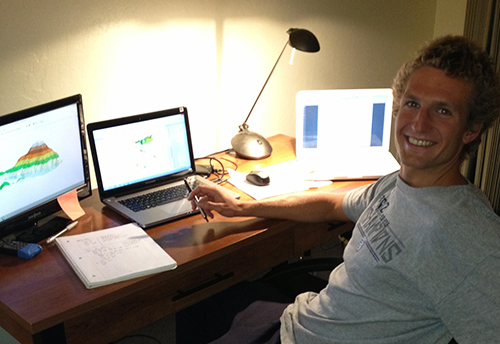

About Me
Hi, I'm Scott Farley. I am currently a graduate student at the University of Wisconsin, in Madison, Wisconsin. I am studying Cartography and GIS, and hope to end up with a masters degree in the spring of 2017. My research is focused on the development of interactive visualization tools for large paleoecological data networks. This work fascinates me because at this time we have few tools to effectively visualize, explore, and understand these resources, which can be influential in understanding how the world may react to abrupt anthropogenic climate change in the coming century. My work caters to both scientists and policymakers alike, in the hope that interactive visualizations of past climate and land cover will improve everyone's understanding of the drastic implications of global change.
I grew up in Pasadena, California, and got my undergraduate degree at the University of California, Berkeley, where I studied Geography. For my undergraduate thesis, I studied GIS integration of mechanistic models of wildfire behavior. I really enjoyed this work, since I got to play with some really cool software, write some interesting code, and work on a project that had immediate application in the real world. I also worked as a student researcher in the Quaternary Paleoecology Lab at Berkeley to study species response to climate change during the Holocene using statistical models and comparing the results to the fossil record. It was here that I got really interested in trying to apply our knowledge of the past environment to the communication of the effects of contemporary global change. At Cal, I was also captain of the varsity men's swim team, where I was a part of three team National Championships and two Pac-12 team titles.

Between my undergrad and graduate studies I struck out on my own to implement fire modeling in the real world and promote risk awareness and communication around the Bay Area. In 2014, I incorporated Firesphere, LLC and worked on a couple mobile app-web-portal system to overcome several of the important shortcomings of modern fire risk communication tools. My tools were aimed at both improving data quality, by using crowdsourcing techniques, and perception of risk, through interactive visualization. During this project, I was able to work closely with the faculty at UC Berkeley, fire officials at the Lamorinda Fire Department, and with residents of the East Bay. More on this project can be found on the project website.
In my (limited) free time as a graduate student, I like to run marathons, travel, and go climbing. I recently returned from an extended trip around Europe -- visiting Sweden, Germany, Hungary, Poland, Austria, and Finland. During the summers, I like to go backpacking and mountaineering. I am planning a summer trip out to Colorado, Wyoming, and Montana to go climbing the rockies.